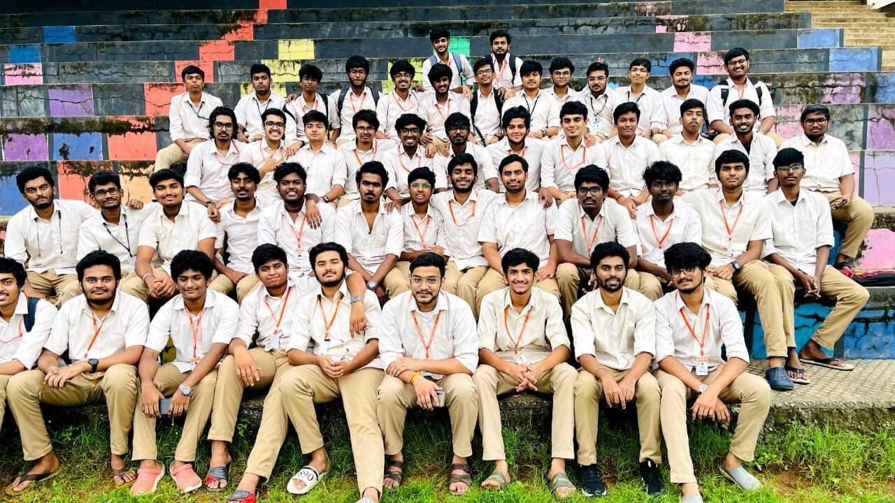

My Experience in B-TECH

I am a 18-year-old from India and I am currently a sophomore studying Computer Science at ASE-Coimbatore as mentioned earlier.After a miserable period of online sem,entering to this YB block with full of excitement because we feel like entering to heaven from hell which we faced last 2 years in intermediate.... Started enjoying every day in this semister.The mess food was below average with above average taste of evening snacks. Just learned a bit of C with a touch of computer hardware essentials going around with cryptography.The faculty were very supportive.This completes my first year with good CGPA.
After completion of first year, we have a two month break . In this period i enjoyed eating my mom food and learned a lot of things like driving , some python coding . I have been watching more horror movies , anime in this period. I have been trying to find different domains of cybersecurity and thinking about my future career. This acknowledgement helps me so much in building myself. Still more .... .This finishes my holidays.

This kick-offs my second year.we have been given rooms in the Agasthya Bhavanam Hostel. The hostel was so big and it is near to my Academic block . Celebrated Onam ryt after some days .After couple of working days , we had been started preparations for the "Gokulashtami" event at campus . At first, I hadn't shown any interest in any of the event . Later , I kinda like to paint and painted some avatars of krishna for the event . Comes the D-day , we enjoyed to the fullest and felt the vibes of college celebrations. Ryt after we had been preparing for the periodicals . I am learning C++ , Oracle sql , CTF'S , Crypto etc ......
> **** This concludes my college life till now